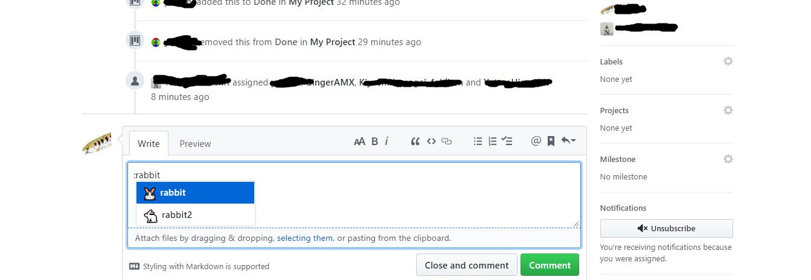
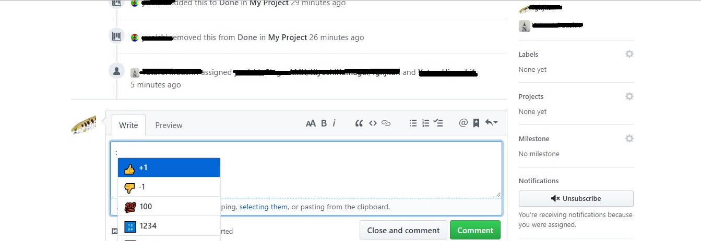
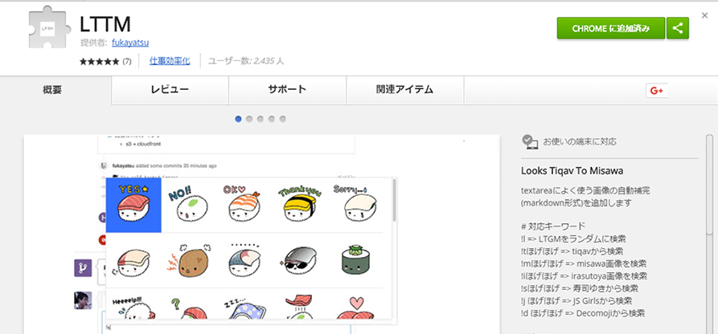

emotiocnとは
emoticonはマークダウン機能の一つでコミットやメッセージを送る際に絵文字を使うことができます。
絵文字を使うことでコミュニケーションの幅が広がり開発をより楽しく進めることができます。

LTTMとは
LTTMはChrome拡張機能でLineのようなスタンプをメッセージ残せる機能です。
「寿司ゆきスタンプ」や「いらすとや」の画像を瞬時に挿入できる「LTTM」
上記画像のChrome拡張「LTTM」をインストールしたのち、コメント欄に「!s」と打てば「寿司ゆきスタンプ画像」が、「!i」と打てば「いらすと屋」の画像がランダムで表示されます。その後、続けて何か文字を打てば対応したスタンプが絞り込まれて表示されます。
、たまにスタンプや画像を使って場を和ませることも円滑なコミュニケーションには必要かもしれませんね。